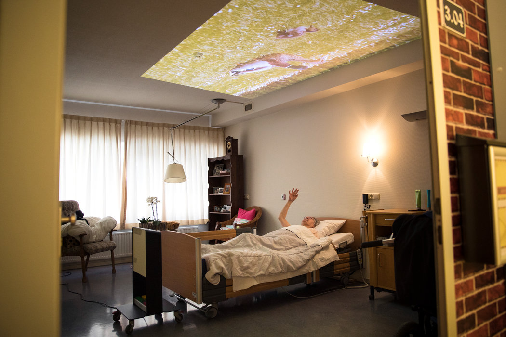

INICIO
Dimmsdale Times
NACIONALES
INTERNACIONALES
CULTURA
OPINIÓN
.___________________________________________________________________.
Obituario
John McCain, héroe de guerra, senador y candidato presidencial, murió a los 81 años
El senador por Arizona fue aviador naval, prisionero de guerra en Vietnam, congresista republicano y dos veces candidato a la presidencia de Estados Unidos. Fue para muchos la personificación del valor como héroe de guerra y un figura política audaz.
Comentario
La pregunta que nos hace humanos
Sin importar las condiciones políticas y culturales de la historia, es necesario contestar continuamente una pregunta antigua: ¿qué es ser humano? Los grandes problemas de la humanidad solo pueden resolverse si respondemos esa pregunta de manera honesta y permanente.
Salud

Un tratamiento innovador para la demencia: fomentar la felicidad
Viajes simulados, música, conversaciones, proyecciones de espacios en la naturaleza y el olor constante a flores son algunos de los métodos que han suplantado a los medicamentos en centros de cuidado neerlandeses con la intención de paliar el declive cognitivo al reducir el estrés.
Caricaturas
Trump implicado
El presidente de Estados Unidos tuvo uno de los días más aciagos de su mandato esta semana: dos de sus antiguos aliados más cercanos, su exabogado y uno de los jefes de su campaña presidencial, fueron declarados culpables de varios delitos.